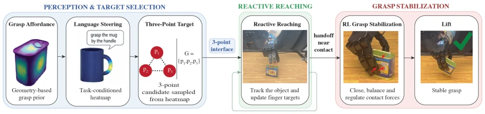
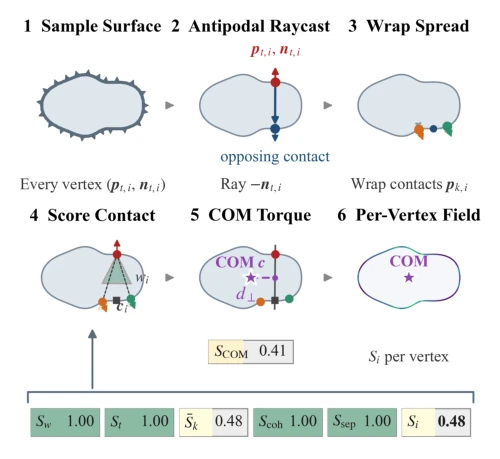
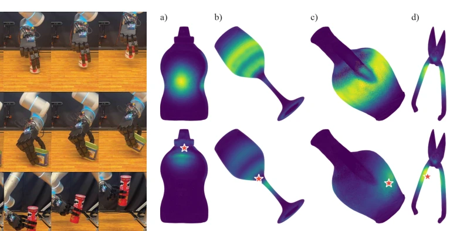
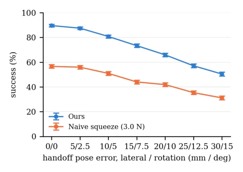
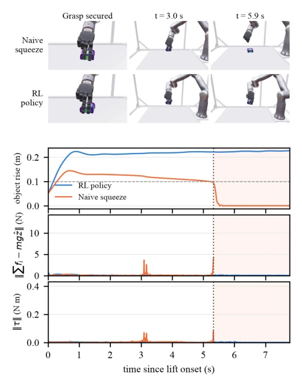
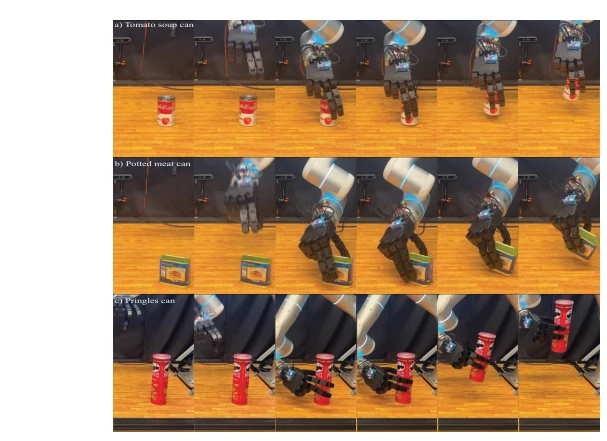
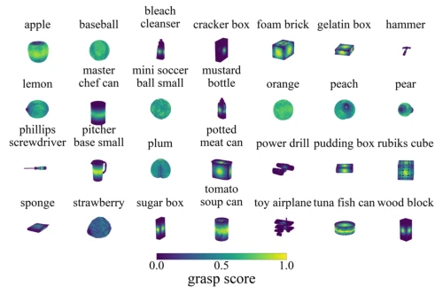
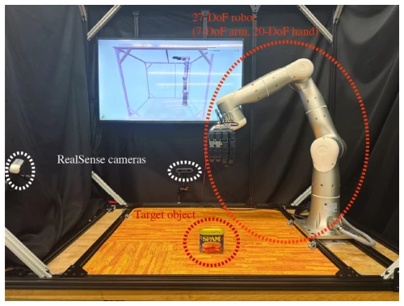
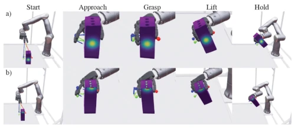

This paper applies a "divide and conquer" modular surgery to Dexterous Grasping. It decouples global geometric reasoning and local contact control, linked via a three-finger interface, with a clear logic. The most brilliant part is the final centimeter RL policy, which boldly operates without observing object geometry or vision, stabilizing solely on proprioception, equivalent to letting the policy "feel the elephant with eyes closed," actually achieving stronger generalization. However, this approach has significant drawbacks: it completely depends on complete mesh generation for heatmaps; if the object lacks a model or deforms, the system fails. Moreover, three-finger pinching still struggles with large objects or special shapes; although the hardware demonstration involved Pringles cans, it remains essentially an "open-book exam" based on predefined geometry, falling short of true "closed-book" universal grasping. In summary, this is a clever engineering compromise, but one should not expect it to solve all grasping challenges.
Dexterous grasping is typically divided into three stages: point selection, reaching, and stabilization, ideally responding to feedback in real-time. Existing hierarchical methods such as [9] address reactive reaching for two-finger pinching but lack force closure, with rotational degrees of freedom unconstrained, failing to provide omnidirectional force control. End-to-end RL methods [10-13] attempt unified handling but require high training distribution requirements; variations in object pose and support height easily lead to policy failure. This paper aims to address force closure and error robustness issues in three-finger grasping. Existing works either have goal generation detached from the framework or controllers unable to adapt to perception errors. We require a method that can select points based on geometry and correct contact via feedback, with policies reusable across objects to avoid retraining for each object.

Fig. 1: Our system consists of three stages. (Perception & Target Selection) A task-agnostic grasp-affordance heatmap is computed from the object’s geometry using a geometry-based grasp prior, optionally refined by a language instruction into a task-conditioned heatmap; a three-point grasp candidate is sampled from it. (Reactive Reaching) The three points are passed through a three-point interface to a model-based reactive controller, which tracks the object and updates finger targets until near contact. (Grasp Stabilization) A learned policy then closes the fingers, refines contact, stabilizes the grasp, and lifts the object.
The system is divided into three stages: 1. Target Selection: Offline computation of a grasp-affordance heatmap based on antipodal contact scoring (aperture, friction cone, centroid distance), supporting language instruction anchor steering. 2. Reactive Reaching: A model controller tracks the object and guides fingers to selected points. 3. Grasp Stabilization: An RL policy takes over the final centimeter, observing only finger joint states and actions without inputting geometry or vision. The innovation lies in the "three-finger interface," assigning geometric responsibility to the planner and contact responsibility to RL. Heatmap generation utilizes ray casting and wrap contacts scoring, considering friction cone alignment and normal consistency. Steering reselects regions through Gaussian weighting without requiring retraining. RL uses PPO, with a reward function containing reach, contact, and lift terms to ensure stable lifting after contact. The observation space is a 33-dimensional joint state stack, with the policy shared across objects. The model controller handles global obstacle avoidance, while RL handles local contact force regulation; the two are decoupled via three-finger targets, reducing RL's input dimension dependency. This design enables the RL policy to avoid retraining for each object, significantly enhancing generalization capability while retaining the model controller's efficiency in utilizing geometric information.

Fig. 2: Offline heatmap generation algorithm: (1) select a thumb vertex and normal; (2) cast an inward ray to the opposing surface; (3) place two wrap contacts; (4) score aperture, friction-cone alignment, normal coherence, and finger separation; (5) weight by grasp-axis distance; and (6) repeat over all vertices to obtain the heatmap.

Fig. 8: Heatmaps steered toward anchored positions on the object. Top row: the default heatmaps from object geometry alone. Bottom row: the same heatmaps after placing a 3-D anchor (red star) on the requested region of (a) the mustard bottle, top; (b) the wine glass, stem; (c) the pitcher, body; and (d) the wire cutters, handle. Each column shares one camera and one color scale, so the two rows are directly comparable.
Tested on MuJoCo with 24 YCB objects, comparing Naive Squeeze and End-to-End RL. The metric is grasp improvement success rate. Results: Proposed method 91.9%, Squeeze 56.1%, End-to-End nearly 0. The main gaps are in Sugar Box and Tomato Soup Can. Hardware testing used a 7-DoF arm and 20-DoF hand, successfully performing lateral grasps on unseen Pringles cans. Ablation studies show handoff error tolerance is acceptable, but success rate decreases as error increases. This proves modular design is more robust than simple squeezing, and the RL policy generalizes without object geometry. The Squeeze baseline tends to slip during the lifting phase; the proposed method detects contact via a torque observer, improving stability. Additionally, experiments verified the steering function, which can quickly adjust the grasp region based on anchors without modifying downstream modules.

Fig. 4: Grasp-and-lift success under handoff pose error. Each point is the unweighted mean across eight objects and 3,584 episodes, with 95% bootstrap intervals.

Fig. 5: Representative potted-meat-can trial: squeeze (upper row) and learned policy (lower row). Plots show object rise and residual wrench; samples after squeeze contact loss are omitted. This deployment-controller simulation has no episode limit, unlike the 4 s benchmark. Here, t = 0 denotes a 5 cm object rise.

Fig. 7: Hardware demonstrations, one time sequence per row: top-down grasps of (a) the tomato soup can and (b) the potted meat can, and (c) a side grasp of the unseen Pringles can.
其他图片Other Figures

Fig. 3: Grasp-affordance heatmaps for 28 YCB objects. Surface color denotes the normalized score Si assigned to a candidate thumb contact at each mesh vertex, using a common scale from low (purple) to high (yellow).

Fig. 6: Hardware setup with a 7-DoF arm, a 20-DoF multifingered hand, and two external RealSense cameras. FoundationPose [23] tracks the target object.

Fig. 9: (a) Default grasp selection and (b) steering toward the top of the same object. Columns follow one execution from start to hold; the middle three overlay the heatmap, the sampled grasp positions, and the finger contact positions.